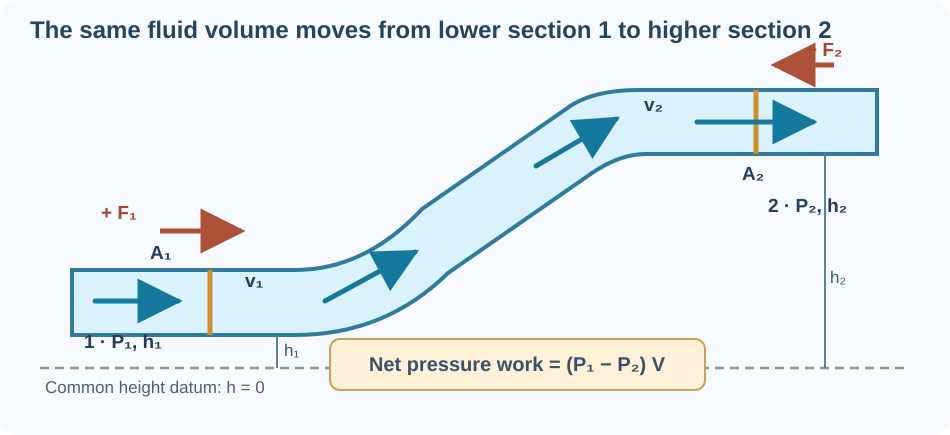

Static pressure, P
The ordinary local fluid pressure in pascals (Pa); distinct from the kinetic or dynamic-pressure term. One consistent gauge or absolute pressure reference must be used at both points.
GRADE XI · FLUID MECHANICS · TOPIC 6.5
See exactly how inlet pressure work, kinetic energy and elevation combine. Derive Bernoulli’s equation in twelve steps, then calculate pressure and speed in horizontal and vertical flows.
V95-B5 public study preview, not a completed or teacher-approved Unit 6 course. Based on the owner’s private prepared master (combined pp.197–226), merged Topic 6.5 academic review and supplied FBISE Grade XI framework. This page contains newly written explanations and original artwork; the original printed NBF pp.99–101 and textbook Figure 6.9 have not been fully compared. These are not verbatim original textbook exercise transcriptions or individually certified FBISE MCQs.
These classifications come directly from the supplied FBISE assessment framework, PDF pp.11–12. They do not certify per-question labels; students still need both horizontal and vertical applications under the summative B40 outcome.
01 · START WITH THE MODEL
This school derivation assumes steady, incompressible flow of a fluid with negligible viscosity and mechanical losses along the same streamline. Gravity is approximately uniform. No external pump or turbine adds or removes energy between the two chosen sections. A consistent vertical height datum is used throughout.
The ordinary local fluid pressure in pascals (Pa); distinct from the kinetic or dynamic-pressure term. One consistent gauge or absolute pressure reference must be used at both points.
At the school level, each cross-section’s representative flow speed, in m/s. For a real nonuniform velocity profile, replacing local streamline speed by a section average is an additional approximation.
Vertical height measured from one common datum in metres. Sloping pipe length is not the vertical height difference.
02 · FULL WORK–ENERGY DERIVATION
Track the same small quantity of fluid between sections 1 and 2 in a steady ideal streamtube. During one short, shared interval Δt the transported volumes at both ends are equal: V = A₁v₁Δt = A₂v₂Δt, and the transported mass is m = ρV.

The negative sign on outlet pressure work is essential: the downstream environment resists the tracked fluid parcel. Cancelling volume and mass works only because the derivation tracks the same steady, incompressible throughput.
03 · THREE TERMS, THREE COMPATIBLE UNITS
P is measured in pascals (Pa = N/m² = J/m³).
½ρv² has units (kg/m³)(m²/s²) = kg/(m·s²) = Pa.
ρgh has units (kg/m³)(m/s²)(m) = kg/(m·s²) = Pa.
Because all three terms have the same units, they can be added. For another useful view, divide by ρg (nonzero):
Do not confuse forms: P + ½ρv² + ρgh is energy per unit volume, while P/(ρg) + v²/(2g) + h is head per unit weight. You cannot substitute a pressure value in kPa into a head value in metres without conversion.
04 · APPLY THE RIGHT SPECIAL CASE
When h₁ = h₂, the common elevation terms cancel:
When v₁ = v₂, cancel the kinetic terms instead:
When both quantities change, neither contribution may be discarded. Use the full signed expression:
For an unknown outlet speed, rearrange to v₂² = v₁² + 2(P₁ − P₂)/ρ + 2g(h₁ − h₂). A physically real speed requires v₂² ≥ 0. A negative value indicates inconsistent givens or an unsuitable assumed model; it is not a meaningful real speed.
05 · COMBINE WITH TOPIC 6.4, WITHOUT OVERCLAIMING
For a steady, unbranched, incompressible flow with negligible losses, continuity gives A₁v₁ = A₂v₂. For circular cross-sections A = πd²/4, so v₂ = (d₁/d₂)²v₁. Substitute that speed in the Bernoulli pressure equation if both sets of assumptions apply.
At a fixed height, this model predicts a static-pressure reduction where the mean speed increases. However, a real constriction may introduce viscous losses, turbulence and altered overall discharge. These ideal equations do not independently establish the true downstream pressure of an arbitrary real installation.
06 · FULLY WORKED EXAMPLES
All eight cases below are newly explained, teacher-developed Part C numerical practice from the prepared master, not original numbered NBF Example 6.x or Assignment 6.x questions in Topic 6.5. SI conversion and model assumptions are stated. Water uses ρ = 1000 kg/m³ and g = 9.8 m/s² unless specified otherwise.
At equal elevation, P₁ = 180 kPa, v₁ = 2.0 m/s and v₂ = 5.0 m/s. Determine P₂.
At section 1: P₁ = 220 kPa, v₁ = 3 m/s and h₁ = 2 m. Section 2 has v₂ = 4 m/s and h₂ = 8 m. Determine P₂.
For horizontal water flow, v₁ = 1.2 m/s and P₁ − P₂ = 5400 Pa.
Static pressure is 120 kPa at elevation h₁ = 12 m; downstream elevation h₂ = 7 m and speed remains unchanged.
At one water-flow point, P = 180 kPa, v = 4.0 m/s and h = 3.0 m.
Diameter decreases from 8.0 to 4.0 cm; v₁ = 1.5 m/s and P₁ = 200 kPa.
An ideal streamtube transports V = 0.020 m³ between inlet P₁ = 180 kPa and outlet P₂ = 150 kPa.
Water moves from (P₁ = 150 kPa, v₁ = 4 m/s, h₁ = 5 m) to (v₂ = 2 m/s, h₂ = 7 m).
07 · INTERACTIVE LEARNING LAB
The pressure solver evaluates P₂ = P₁ + ½ρ(v₁² − v₂²) + ρg(h₁ − h₂). Choose a prepared horizontal example, a rising accelerating flow or a rising-but-slowing flow. The result is an ideal-model prediction, not a measurement of a real pipe.
Head is a supplementary learning form of the equation. It uses metres, not pascals. Use one consistent pressure reference and height datum.
No entered value is stored or sent to a server, no school grade is recorded and the outputs do not substitute for real hydraulic design. A negative gauge pressure result is not automatically impossible, but absolute versus gauge pressure and the physical model must be checked before interpretation.
08 · REVISE WITH EXPLANATIONS
The pressure force exerted at the outlet opposes displacement of the tracked fluid volume; W₂ = −P₂A₂Δx₂. The inlet force acts with the displacement and contributes positive work.
No. The school derivation assumes steady, incompressible, effectively inviscid flow along the same streamline without loss or external shaft work. Real mixing, friction and other effects can break the ideal relation.
Each term is mechanical energy per unit volume: J/m³, numerically equal to Pa. Their sum is dimensionally consistent.
It falls, since P₁ − P₂ = ½ρ(v₂² − v₁²) is positive when v₂ is greater than v₁, assuming the same fluid streamline and no losses.
Not necessarily. Increased elevation tends to reduce the static-pressure term while decreasing speed tends to raise it. Calculate their signed contributions.
Continuity expresses conservation of mass; Bernoulli connects static pressure to kinetic and gravitational energy under additional assumptions.
B40 is summative and covers horizontal and vertical Bernoulli applications. B39, concerning the pressure difference associated with differing flow rates, is formative. A practice example using B39 ideas is not automatically a separately prescribed summative B39 item.
A real speed magnitude cannot be the square root of a negative number. If the algebra gives v² below zero, check supplied pressures, height signs and the ideal-flow assumptions.
Full Bernoulli: P + ½ρv² + ρgh = C
Outlet pressure: P₂ = P₁ + ½ρ(v₁² − v₂²) + ρg(h₁ − h₂)
Horizontal: P₁ − P₂ = ½ρ(v₂² − v₁²)
Equal speed: P₂ − P₁ = ρg(h₁ − h₂)
Pressure work: W = (P₁ − P₂)V
Head extension: P/(ρg) + v²/(2g) + h = H
Continuity where valid: A₁v₁ = A₂v₂
Unit bridge: 1 kPa = 1000 Pa; 1 Pa = 1 J/m³
Return to the Unit 6 Learning Desk, experiment with the existing original Bernoulli–Venturi simulator, and practise the 80 original provisional Topic 6.5 MCQs. Topic 6.6 develops real applications.
Provenance: owner's private prepared Unit 6 master pp.197–226, merged V94-C2.5 Topic6.5 academic review, official FBISE framework pp.11–12. No protected NBF figure/text scan, private teacher PDF or student grading record appears on this page. Final original-book figure check, question-level verification and teacher signoff remain pending.